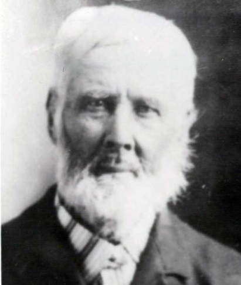

1830 – 1908
| Birth: | 23 May 1830 | Forest of Dean, Gloucester, England |
|---|---|---|
| Marriage: | 24 Mar 1855 | Clara Wheeler Ship |
| Death: | 22 Nov 1908 | Fountain Green, Utah |
| Home | ||
Thomas Morgan was born in the Forest of Dean, Gloucester, England on 23 May 1830, to Elizabeth Morgan from Coleport, Monmouthshire, Wales. Thomas took his mother’s name. When Thomas was nearly two years old, his mother married Edward Coleman, and had three more children by him.
There were no schools nearby so no one got much of an education. When Thomas was nine years of age his stepfather was killed in a coal pit leaving his mother with four small children to support. Thomas being nine and the oldest had to go to work in the coal pit, but even then they couldn’t manage, so when George [his half- brother] was ten he went away to work for Mr. Bennett’s servant and stayed four years. Then he left there and went to Edge Lodge. During this time his mother married again to a Mr. Thomas Smith. Thomas Smith was born 11 March 1827. He was three years older than Thomas and sixteen years younger than his wife.
While George was away, his mother, stepfather and the children joined the people that called themselves Latter-Day Saints. They declared that an angel had brought back the everlasting gospel and revealed the will and power of God to men on earth and called them to repentance. While George was away, his younger brother brought him clean clothes, then told him the best he could about the new gospel and the laying on of hands for the healing of the sick, and the many great blessings. A short time later George became sick and had to go home. He found there a great difference there at home, all for the better part. Even though he was ill, there was singing and everyone seemed so very happy and contented. The family taught him the principles of the gospel the best they knew how and wanted him to embrace the glorious truths. If he would believe that Jesus Christ had authorized men to act in the sacred ordinance on earth, and if would believe and call the Elders to get a blessing he would be healed. He believed every word because it is scripture. He had been in bed a whole week and not able to set up. The following Sunday two elders came, they asked George if he believed the Prophet that the Lord had raised up in these latter days and the blessings that are enjoyed by them who believe. He said he believed all their words. Then they anointed him with oil, laid their hands on his head and prayed in the name of the Lord for the blessing. He bore witness that he was healed that very hour and was baptized the following Sunday, 14 February 1850 by Elder Henry Smith in East Dean, Gloucester, England.
At the close of the conference, he went down to East Dean to visit where his home and family had been, but his friends and most of his family had gone to America. They had gone 6 December 1854.George Coleman’s history goes on to tell of his going on a mission and of a conference held 31 December 1854. His mother, brothers, stepfather, two sisters and an uncle named Thomas Keyes had all gone. One brother had died in May of 1854, one sister was left behind to live at the home of Mr. and Mrs. Sanders at Herefordshire. After a short visit at the Forest of Dean he went back to his mission. [Millenial Star vol.16-16 byu#m61]. The family sailed for America on board the ship “The Clara Wheeler” 1854-1855 The voyage was with 421 saints on board, including infants cleared for New Orleans on the 24 of November. Elder Henry E. Phelps took presiding of the company with Elders John Parsons, and James Crossley as counselors. “ We commend these brothers and company to the watchful care and protection of our Heavenly Father and trust his blessings will constantly attend them in their journey to the land and cities of Zion.” This was a blessing from President Richards. The Clara Wheeler pulled into the Mersey, Liverpool area on 30th November having been driven back by the stress of weather. We understand that she received no material damage and the saints on board are generally well.
After receiving supplies of water and provisions, she again put to sea on the 7th of December with a favorable wind. “During the voyage we had one birth, eight marriages, and thirty deaths [children dying from measles].1” One of the marriages was that of my grandparents Thomas Morgan and Fannie Vizzard, she was the daughter of David and Mary Ann Maluy/Vizzard. On the ship’s log it reads with her maiden name, but after they landed it read “Thomas Morgan and wife”. My mother Mary Ann Oldroyd, told me they were married on the ship. President Phelps reported, “During the whole passage we were favored by our Heavenly Father by having fair winds and in making, I presume, the quickest ever known at this season of the year.” We arrived in New Orleans on 11 January 1855, where we were met by Elder McGraw, making the voyage in 36 days. On arriving at New Orleans the ship’s captain contracted with the steamboat Captain Boyd to take the saints up the Mississippi to Saint Louis for $3.50 for each adult and children from 3-12 for half price, under 3 for free. The steamboat allowed one hundred pounds of luggage for each passenger for free, and over 100 pounds at a cost of 40 cents per pound. One half of the company had no means to pay passage further than New Orleans, the problem was solved by getting those who had money to loan to those who had none. Until they could be able to repay and not leave the poor saints behind to suffer the cold charity of this wicked gentile city, for times were very hard here, many people were begging for bread, and there was no employment. With mighty effort President Phelps succeeded in getting all off. They seemed like good saints and willing to help along.” They only remained in New Orleans 24 hours before they were on their way to Saint Louis. They crossed the plains and arrived in the Great Salt Lake City 24 October 1855. My folks all crossed the plains in 8th co. Captain Milo Andrus assisted by John S. Fulmer.